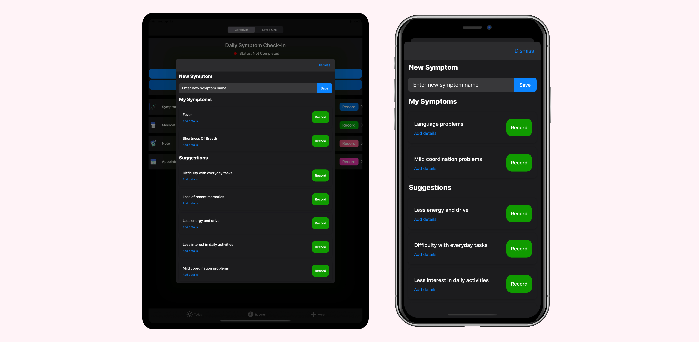

We're always making OpenCare better. It's free. Support improving caregiver's lives around the world & rate us 5 stars.
Version 29
New Feature Timeline tab now shows a calendar for each month. Click any day in the calendar to see the records for that day. You can record a new record in the timeline by clicking "Add" in the top-right.
New Feature Timeline filters. You can now filter your events in the timeline by type.
Version 28
New Feature Secure your account access with Face ID. In the More tab, click "Enable FaceID Login" to login with FaceID/TouchID when opening the app.
New Feature Talk to our team. Introducing our Intercom integration. Tap "Talk to our Team" in the More tab to directly chat with our team members about issues, suggestions or features.
Version 27
New Feature Introducing symptom body locations. When recording a symptom, press "Body Locations" to pick locations of your symptom. View the locations in symptom detail and timeline detail on the Reports tab. This feature is great for dermatological symptoms.
Version 26
New Feature Introducing Dark Mode. When (iPhone > Settings > Appearance > Dark) is turned on, OpenCare will display a dark theme.
Improvement We rebuilt medication and appointment details from the ground-up. You can now add more detailed information to medications like dosage, unit, instructions, frequency, and photos.
Improvement We consolidated the timeline intro the track page.

Version 25
New Feature Use Daily Check-In to monitor your symptoms each day with structured prompts.
New Feature You can now add photos when recording medications and appointments.
Improvement Faster interface for inputting symptoms, medications, and appointments. Few clicks means you can create new ones faster.
Improvement We improved OpenCare+ subscription marketing.
Improvement We improved the sign-up page for users to enter their birth date and email.
Bug We fixed a bug where a crash could occur when deleting a symptom.
Version 24
Bug We fixed a bug where deleting symptoms, medications, or appointments would crash.
Bug We fixed a bug where tapping on details for medications and appointments would crash.
Improvement We improved usage analytics to help our developers improve the product.
New Feature Introducing photo attachments. When recording a symptom, press "Attach Photos". View the photos in your timeline. Great for tracking dermatological symptoms like eczema, allergies, and psoriasis.
Improvement We improved the first-time user experience when getting started with the app.
Changes We increased our minimum iOS device version to iOS 13.0. You will now need iOS 13 in order to update OpenCare.
Bug We fixed some issues with purchasing OpenCare+ subscription.
Bug We fixed some issues with data loss when upgrading to OpenCare+.
Version 22
Improvement We improved our feedback page. Now go to More Tab > Suggest an Improvement. You can enter your feedback without having to send an email.
Improvement We increased the ranges on symptom charts. You can now additionally switch to 2 weeks or 1 year.
Bug Fixed a bug on the symptom charts where the chart would not redraw if there were no records for the date range.
Version 21
Improvement We have greatly improved symptom charts. Data is now represented much more accurately.
Bug Fixed a reloading issue on the calendar module.
Version 20
New Feature Introducing the Apple Watch app for OpenCare. Log symptoms, medications, notes, behaviors, and appointments from your wrist.
Version 19
Improvement Using timeline, you can now directly see your reports. Click "View Report".
Bug Fixed an issue on the timeline's calendar module.
Version 18
Improvement Timeline now displays a calendar. Tap on a day to see its records.
Bug Fixes a potential bug where caregiver/loved one inputs did not work.
Version 17
New Feature Introducing 24/7 cloud storage, sync across all your devices, and first access to new premium features. Upgrade in the More Tab.
Improvement Added Terms and Privacy to the more menu.
Improvement New onboarding experience highlighting the best features of OpenCare.
Improvement You can now PDF Export directly from the timeline page.
Bug Fixed an issue where symptom colors for top symptoms were incorrect on reports details page.
Version 16
Improvement When recording a symptom, you can now choose time, date, and severity. Pick the exact time your symptom occurred.
Improvement Timeline now shows much richer details of your records.
Improvement Timeline will now update automatically after you log a symptom.
Improvement Common actions are now enhanced with vibrations.
Improvement Improved an animation on the modal dismissal.
Version 15
Improvement Support for iOS 13.
Improvement Deleting a symptom will now delete all records associated with that symptom. This fixes a crash seen by some users.
Bug Fixed a bug after onboarding where the name would not update after you entered it.
Bug Fixes a potential crash on the symptom detail screen.
Bug A preset color is now assigned to a symptom if you do not choose a color when creating a symptom.
Bug Fixes a minor UI animation bug with the modal sheet dismissing.
Version 14
Bug We fixed a major bug that prevents the detail sheet from appearing.
Bug We fixed a minor crash on the track page.
Improvement Based on user feedback, navigation tab will now show names instead of "Caregiver" and "Loved One" to better personalize the experience.
Improvement We improved the home tab to help you monitor and log symptoms. Click "View Report" at the bottom to see symptom tracking details.
Improvement Timeline now has a dedicated tab.
Version 13
Improvement Landscape support! Rotate your device on any screen.
Bug Fixed an iPad layout issue on symptoms creation screen.
Version 12
Improvement We improved creating & editing symptoms. You can now add details, medication status, time length, and type.
Improvement We improved the feedback screen on "More" tab to help you better give us feedback.
Version 11
Bug Fixes a bug on timeline details where a symptom rating would not display correctly.
Version 10
Improvement Based on user feedback, you can now delete timeline records.
Improvement Based on user feedback, you can now edit notes.
Improvement Timeline detail for symptoms now shows symptom severity rating.
Bug Fixed a bug where tapping a note in timeline details would not show the note's content.
Version 9
Improvement Based on user feedback, we've improved the notes compose screen.
New Feature Timeline detail. Click on a timeline card and see details about it.
Improvement Track tab now shows symptom averages.
Bug Fixes a number of sizing issues on iPhone 5 devices.
Bug Fixes truncation problem on Instagram button.
Version 8
Improvement PDF Exports now show symptom severity.
Improvement Symptom Score Average is now on the "track" tab instead of record tab.
Bug Fixed bug where close button on chart details did not work.
New Feature Export to PDF for the doctor. Click "Track" tab, then "Export PDF" in top left.
Version 7
New Feature Enhanced Graphs! See interaction of medications, behaviors, and notes with your symptom graphs.
New Feature Enhanced Track tab! Get more details about symptoms.
Bug Fixed a bug for button rating the app.
Version 6
Bug Fixes symptom score indicator position.
Improvement Testing a way to help new users add to their care circle.
Version 5
New Feature Full support for iPad users!
Improvement Enhanced the appearance of the timeline.
Bug Fixed average symptom score indicator position.
Bug Fixes appearance of the symptom score colored bar.
Version 4
Welcome to OpenCare. This version introduces a completely new experience. When we introduce new features or fix bugs, you will see a full explanation here.